Scratch Fun
Step-by-step Scratch tutorials for kids, and finished games to download, open in the Scratch editor and remix. Every tutorial step has its own project file, so you can always catch up.
Tutorials
 Sky GuardScratch tutorial for kids (8+) · 4 short steps · basic blocks onlyMeteors are falling on your valley! Turn the cannon with the mouse, click to shoot, and don't let three of them land. The whole game is 43 lines of blocks, with no custom blocks and no lists.
Sky GuardScratch tutorial for kids (8+) · 4 short steps · basic blocks onlyMeteors are falling on your valley! Turn the cannon with the mouse, click to shoot, and don't let three of them land. The whole game is 43 lines of blocks, with no custom blocks and no lists.
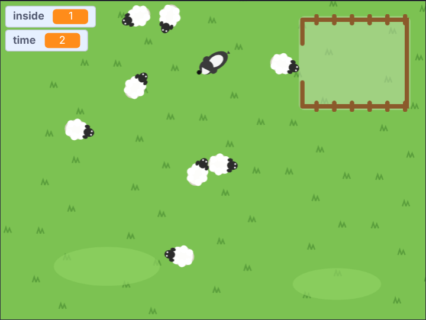
SheepdogScratch tutorial for kids (8+) · 4 short steps · basic blocks onlyYou are the dog. The sheep are scared of you, so wherever you run, they run the other way. Use that to herd all eight into the pen, as fast as you can. The whole game is 28 lines of blocks.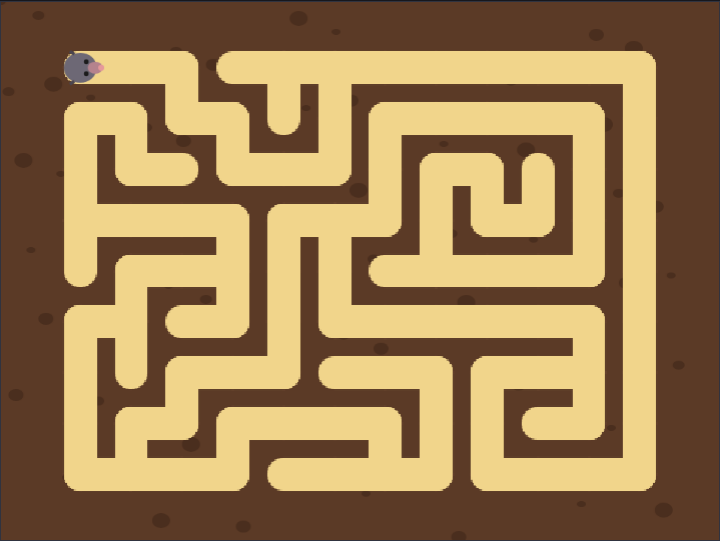
Maze MakerScratch tutorial for kids · 4 short stepsA little mole digs tunnels through the soil, and when it is done, there is a maze. Every time you click the green flag, you get a new one. The trick that makes it work is a block that uses itself!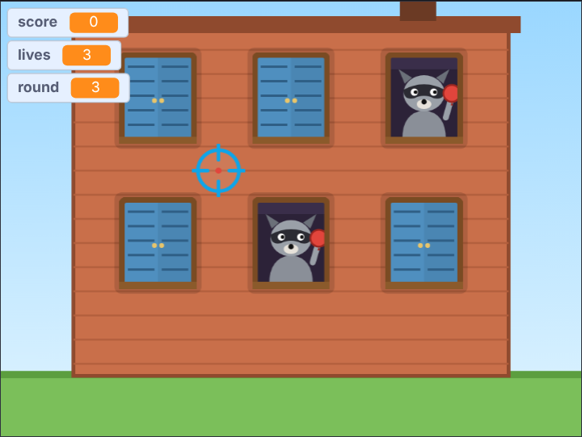
Splat PatrolScratch tutorial for kids (8+) · 5 steps · basic blocks onlySneaky raccoon bandits are hiding in the houses, ready to throw water balloons. Windows pop open: splat the raccoons before they splat you, but don't splash the granny or the kid! Round after round the houses change, and the raccoons get quicker.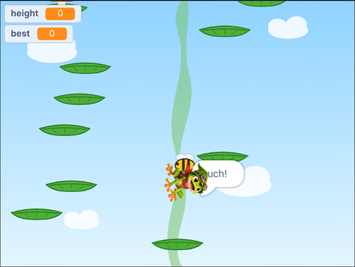
Beanstalk BounceScratch tutorial for kids (9+) · 5 stepsA frog bounces up a giant beanstalk, from leaf to leaf. The higher he gets, the further apart the leaves are, and the more tricks they have: moving leaves, crumbling leaves, springy mushrooms, and bees. How high can you climb?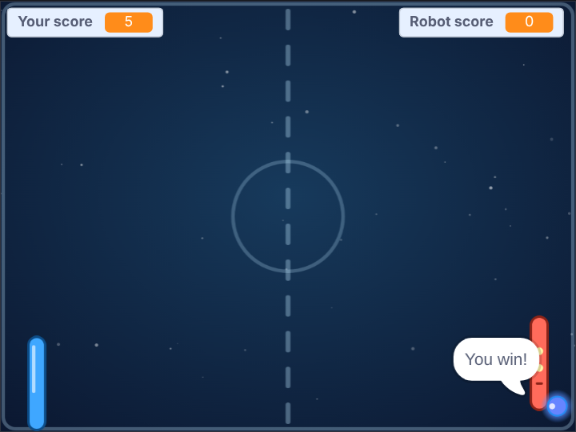
Build Comet RallyScratch tutorial for kids · 6 steps · about 1 hourIn Comet Rally you play against a robot. You both have a paddle. Hit the glowing ball back, and try to get it past the robot. The first one to 5 points wins! Build Dust HopperScratch tutorial · 8 steps · about 3–4 hoursDust Hopper is a landing game. You fly a small survey drone over an asteroid and set it down gently on a landing pad. Along the way you will learn how real game physics work, with speed, gravity, thrust and angles, and how to organise a game into small, named pieces.
Build Dust HopperScratch tutorial · 8 steps · about 3–4 hoursDust Hopper is a landing game. You fly a small survey drone over an asteroid and set it down gently on a landing pad. Along the way you will learn how real game physics work, with speed, gravity, thrust and angles, and how to organise a game into small, named pieces.
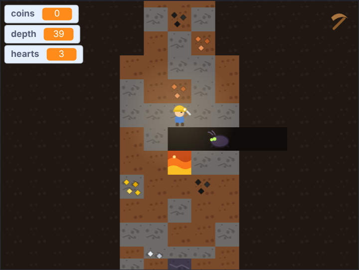
Lantern DeepScratch tutorial for older kids (10+) · 7 steps · a few afternoonsDig down forever. Your lantern only shows the squares right around you: coal, gold, gems, or lava. Collect coins, buy better pickaxes, and watch out for crawlers in the caves.Games
Download a game (.sb3), then open it at scratch.mit.edu/projects/editor with File › Load from your computer.
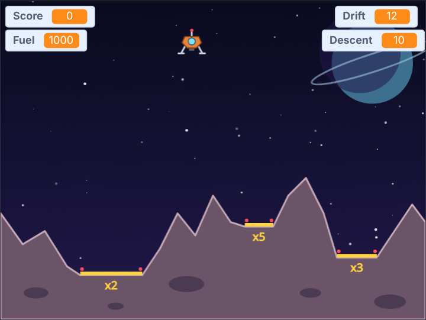
Dust HopperScratch project (.sb3)Land the survey drone gently on a yellow pad.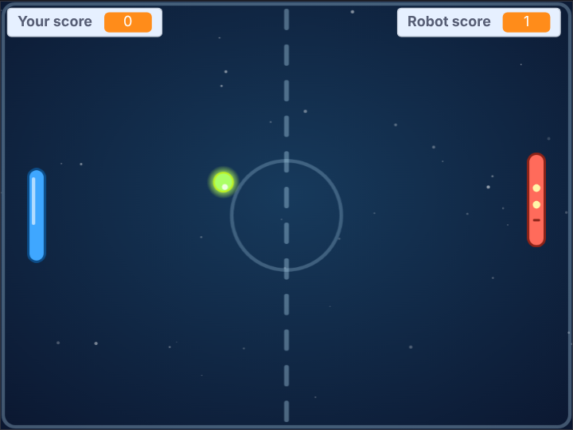
Comet RallyScratch project (.sb3)A two-paddle rally against a robot.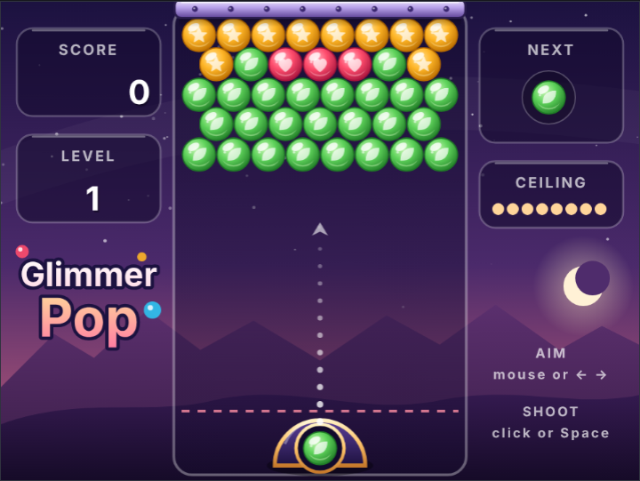
Glimmer PopScratch project (.sb3)Aim and pop bubbles: three of a colour burst.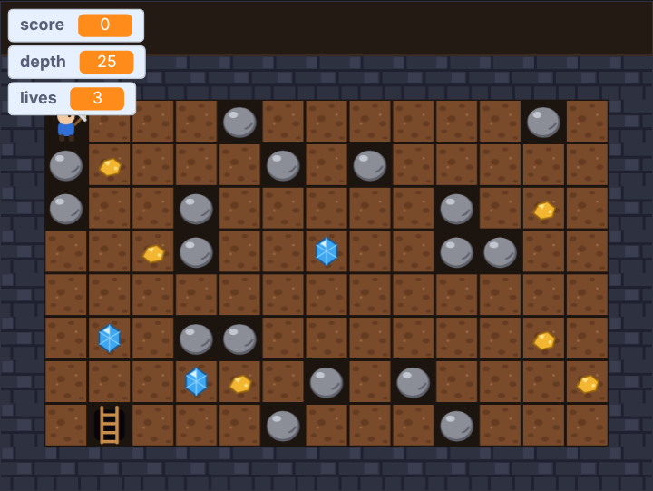
Deep DigScratch project (.sb3)Dig for gold and gems; watch out for falling rocks.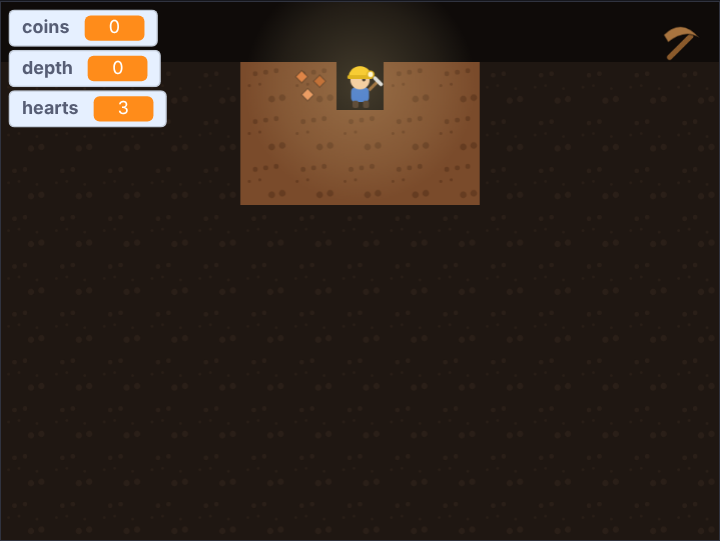
Lantern DeepScratch project (.sb3)Dig down forever; your lantern shows treasure, lava and crawlers.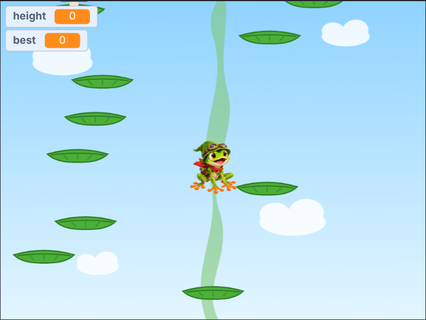
Beanstalk BounceScratch project (.sb3)Bounce up the beanstalk, leaf by leaf.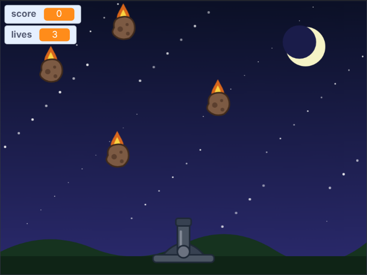
Sky GuardScratch project (.sb3)Turn the cannon and shoot the falling meteors.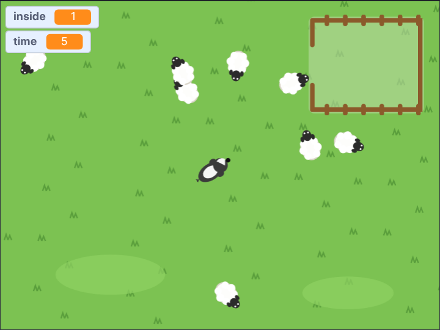
SheepdogScratch project (.sb3)Herd all eight sheep into the pen.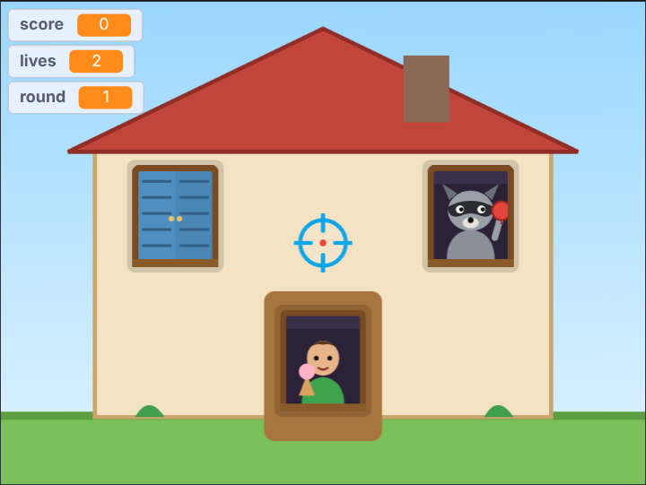
Splat PatrolScratch project (.sb3)Splat the raccoon bandits, not the villagers.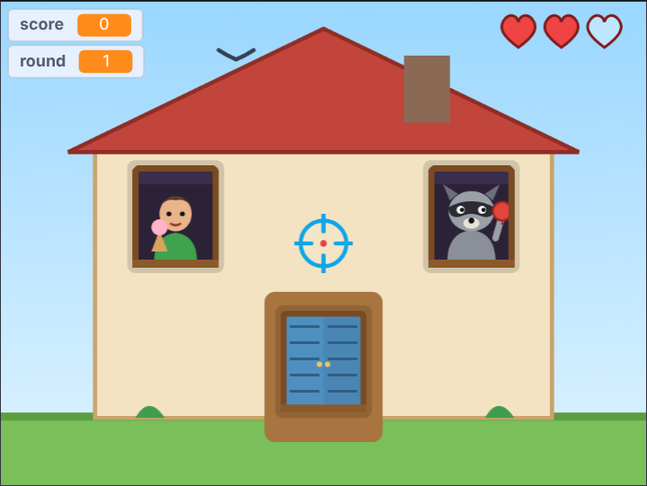
Splat Patrol DeluxeScratch project (.sb3)Raccoons in disguise, combos, splashes and more.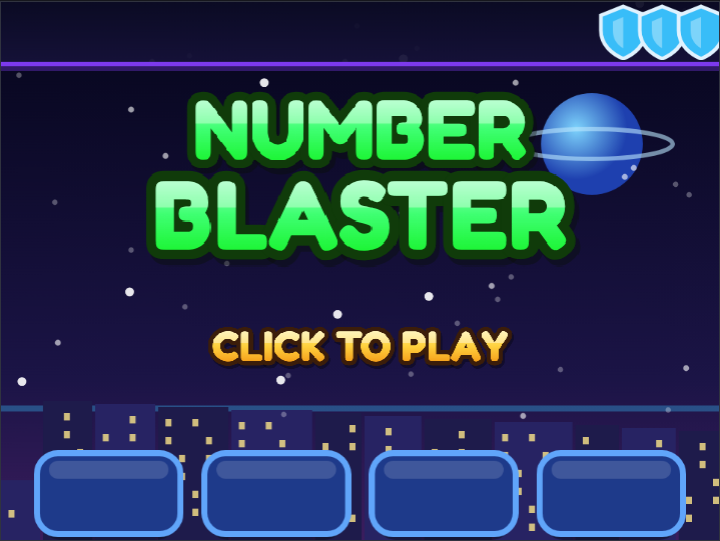
Number BlasterScratch project (.sb3)Maths arcade: blast the falling sums with the right answer.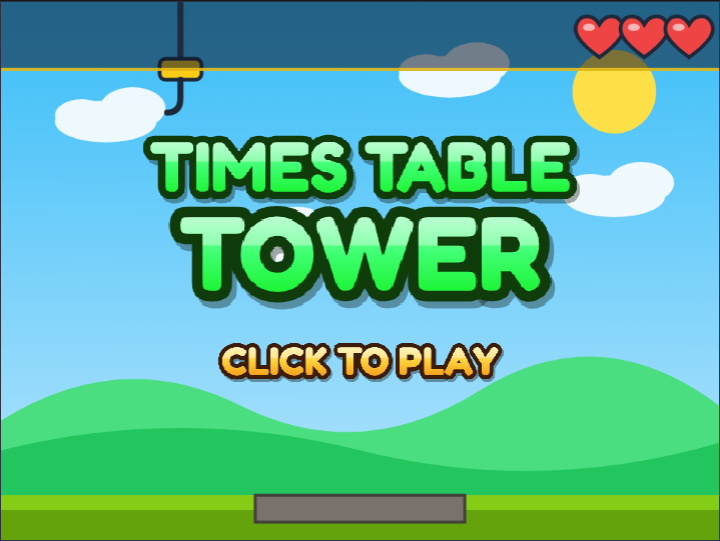
Times Table TowerScratch project (.sb3)Maths stacking: drop the block when it shows the answer.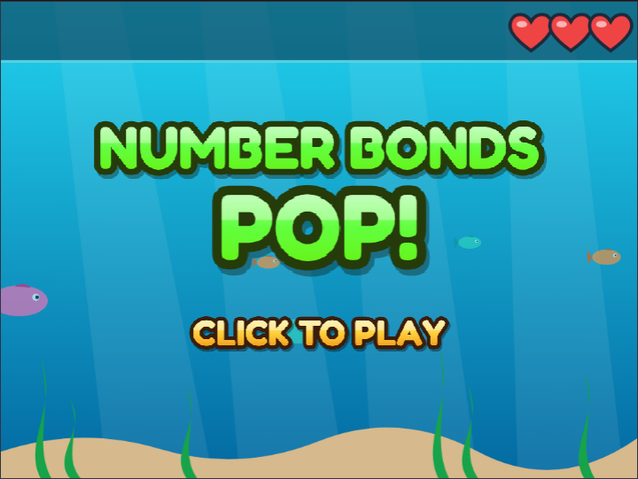
Number Bonds PopScratch project (.sb3)Maths bubbles: pop two that make the target.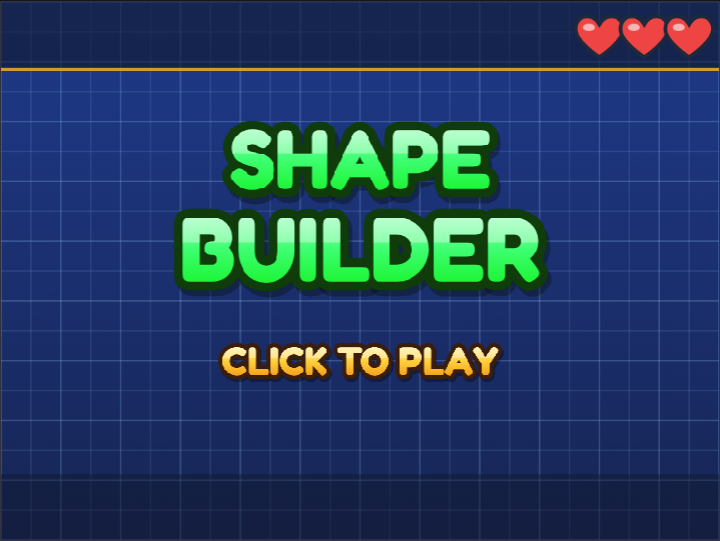
Shape BuilderScratch project (.sb3)Angles: turn each piece to fit its outline.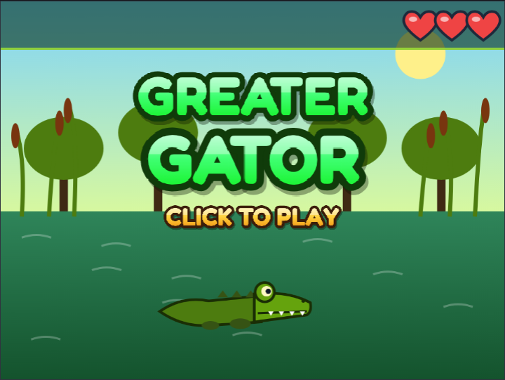
Greater GatorScratch project (.sb3)Comparing: the gator eats the bigger number.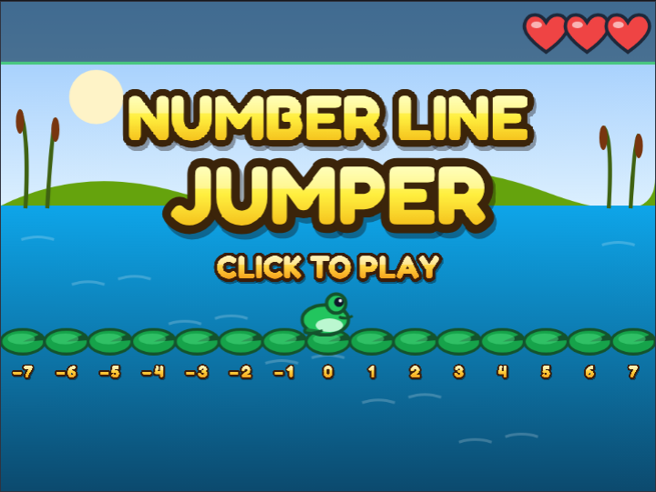
Number Line JumperScratch project (.sb3)Number line: where will the frog land?